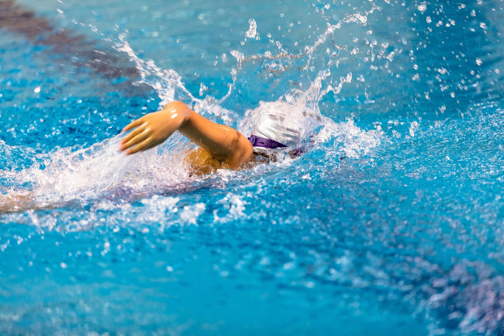

Championship Moments Begin Long Before the Podium
When the University of Virginia recently honored its 2026 NCAA Championship swimming team, it wasn't just a celebration of medals and record times. It was a celebration of years of early mornings, disciplined training, and the kind of quiet commitment that most people never see. For families in Wesley Chapel, Land O' Lakes, and across the greater Tampa Bay area, moments like these serve as a vivid and inspiring reminder of where dedication in the water can lead.
Every swimmer or water polo player standing on a collegiate championship podium was once a young athlete climbing out of a community pool, shaking water from their goggles, and wondering if they had what it takes. The answer, more often than not, was built one practice at a time.
What the NCAA Stage Tells Us About Early Development
College programs like Virginia's don't recruit finished products — they recruit young athletes who have developed strong technical foundations, a competitive mindset, and the coachability to grow. That means the work happening right now in youth aquatic programs across Florida genuinely matters, far more than many families realize.
There are several key qualities that scouts and collegiate coaches consistently look for in young swimmers and water polo players:
- Technical efficiency: Clean strokes, proper breathing mechanics, and smart body positioning in the water are skills that must be built early and reinforced consistently.
- Mental resilience: The ability to compete under pressure, recover from a poor performance, and stay coachable separates good athletes from great ones.
- Work ethic and consistency: Showing up — even when it's hard — is a habit that coaches at every level notice and value deeply.
- Teamwork and communication: Especially in water polo, the ability to read teammates and communicate in real time is a skill that takes years to develop naturally.
The Tampa Bay Advantage: Training Where It Counts
Young athletes in the Wesley Chapel and Land O' Lakes area have something genuinely special working in their favor: year-round access to quality aquatic training. Florida's climate means that swimmers and water polo players here can build volume and refine technique across all twelve months, giving them a meaningful edge over athletes in regions with shorter training seasons.
At Nexar Aquatic Academy, our coaches understand that the path from a youth pool to a university roster is real — and it is being walked by young athletes in this very community right now. Our programs are designed to develop not just athletic skill, but the character and discipline that make athletes stand out when it truly matters.
Inspire the Dream, Build the Foundation
If your child watched highlights of a college swimming or water polo championship and felt something light up inside them, take that seriously. That spark is the beginning of something worth nurturing. Championships are won long before the starting block or the ejection foul — they are won in the daily decisions to push a little harder, listen a little more carefully, and believe a little more fully.
Collegiate programs across the country are watching pools just like ours, looking for the next generation of athletes who combine raw ability with refined skill and genuine heart. The young athletes training in Tampa Bay today have every opportunity to be among them.
Take the Next Step
Whether your young swimmer or water polo player is just getting started or is already competing at a high level, Nexar Aquatic Academy is here to help guide that journey with expert coaching, structured development, and a community that believes in every athlete's potential. The podium starts here — in the water, in Wesley Chapel, and in the work done every single day.
Ready to get in the water?
First practice is completely FREE — no commitment needed.